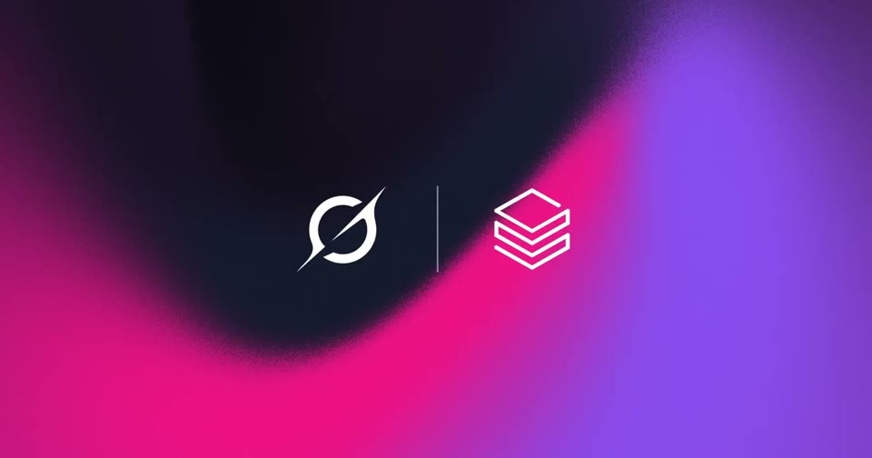
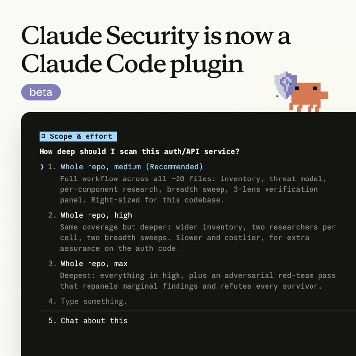
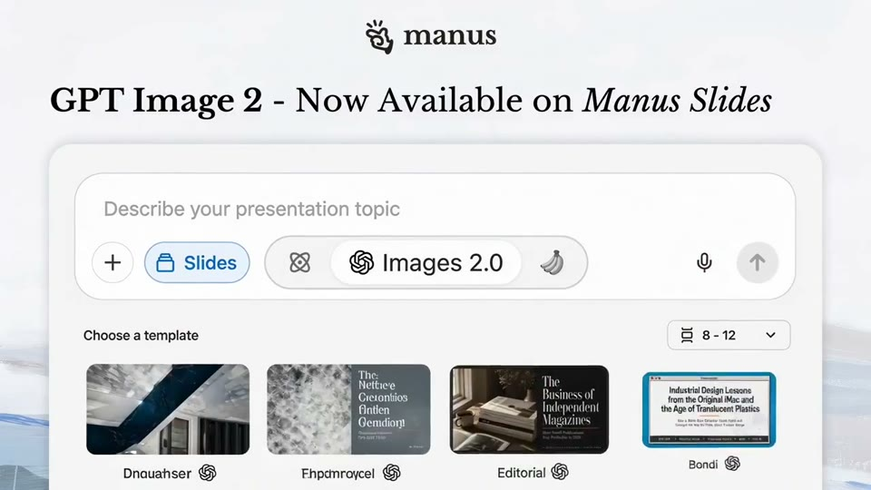
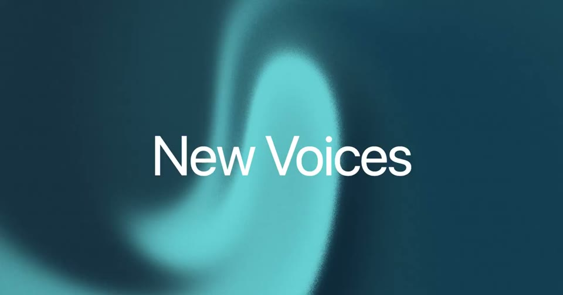
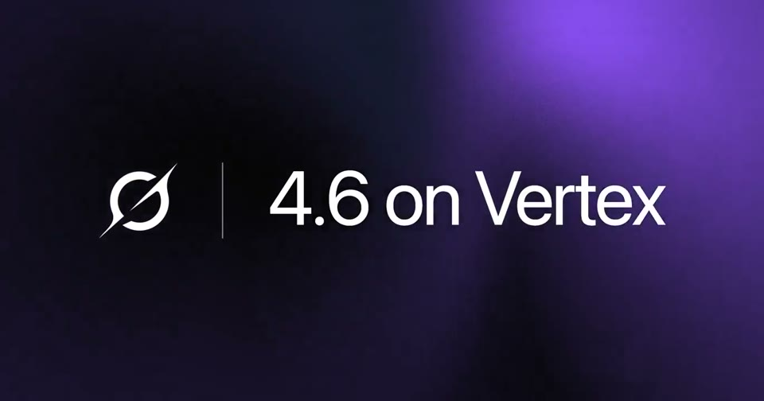

Living posters (the companion posts)
Not the launch film: the posts around it. A static layout where one thing moves, looping silently in the feed.






The rules
Seamless loops of 6–19.23 s where the first and last frames match, often with no audio stream.
One template per partner or platform; only the tint and one word change.
A lockup over a grain fluid gradient, or a headline with a UI card bleeding off two edges.
One moving element: a toggle, a caret, a sprite, a drifting moon.
For Kallo
“Now on the web”, “Now in Japanese”, a square with the result card bleeding off a corner, “Guess the protein” with empty slots: one template, many posts.
Cheap and repeatable; keeps launch week going.
A supplement to the film, not a replacement.
Films
SpaceXAI · 21 new voices · 17M views
SpaceXAI · Grok on Databricks · 9M views
SpaceXAI · Grok on Bedrock · 3M views
Claude · Security plugin · 3M views
SpaceXAI · Grok on Vertex · 467K views
Manus · Nano Banana Pro slides · 455K views
Manus · GPT Image 2 in Slides · 102K views
Manus · Projects · 77K views
Manus · Slide templates · 42K views
Manus · Speaker notes · 32K views
Manus · Recommended Connectors · 32K views